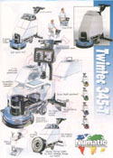
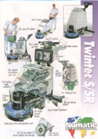

. . . . . . . . . . practical . . . . . . . . . . professional . . . . . . . . . . innovative . . . . . . . . . . unique . . . . . . . . . .
|
 |
 |
|
Over the last 4 to 5 years the Numatic International Scrubber Dryer range has gone from initial design to preliminary manufacturing to taking nearly half of the scrubber dryer market in the UK.
Using existing design from our floor machines and wet pick-up vacuum cleaners, the Twintec range began with a 450mm compact scrubber. Spending money on design and engineering quality rather than cosmetic appearance meant that the Twintec was ideal for small scrubbing applications and not only competed with but beat virtually all other machines on price.
The introduction of a battery operated machine increased our market status further still, with 24 Volt technology, on board charging and a choice of battery power levels adding to the tremendous servicing ease. Also, the choice of recirculating water tanks and the recent addition of stainless steel chassis' and a 500mm model have broadened the choice Numatic aims to give at all times.
The Twintec Series - The Present - The Future - The Choice.....
To order a full Numatic catalogue simply click the icon below or contact the Numatic International Literature Department.